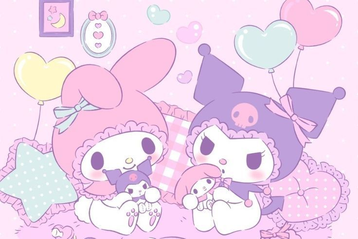

<!DOCTYPE html>
<html lang="en">
<head>
    <meta charset="UTF-8">
    <meta name="viewport" content="width=device-width, initial-scale=1.0">
    <title>Sanrio Friends</title>
</head>
<body>
    
</body>
</html>
    <link rel="stylesheet" href="style.css">
</head>
<body>
    <section>
    <header class="cabecalho">
        
        <p>Apesar de serem inimigas no anime, as duas se tornam melhores amigas no desenho pois Kuromi resolve seus conflitos com My Melody pois descobre que My Melody gosta dela. Assim, mesmo com suas desavenças pela personalidade de Kuromi, elas se tornam melhores amigas e cuidam uma da outra da sua forma.</p>
      <div>  <h3>NUNU AND MEMY</h3> </div>
    </section>
        <section>
            <a href="https://www.sanrio.com.br/"><button class="Sanrio"></button>
                
        </section>
    
    
    </header>
   
    <section> 
    <h2 class="sanrioo">Sanrio     
    </h2>
    </section>
    <section class="livros">
            <div class="org-liv">
                <ul>
                    <li>
                    <h3> Kuromi e My Melody</h3>
                    </li>
                    <h3></h3></li>
               
                </ul>
            </div>  
    </section>
</body>
</html>
